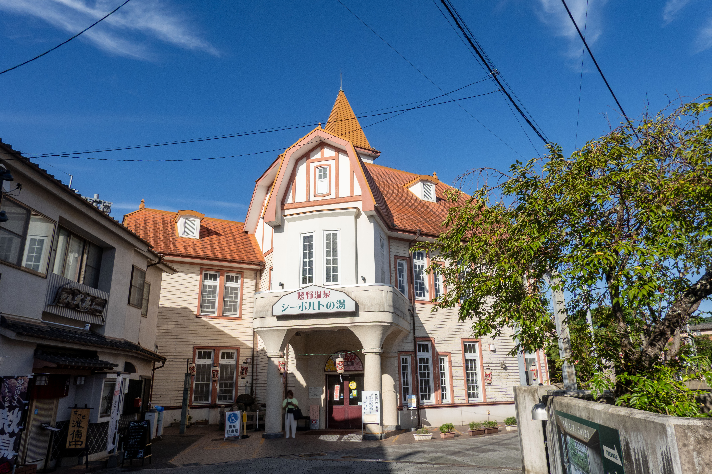
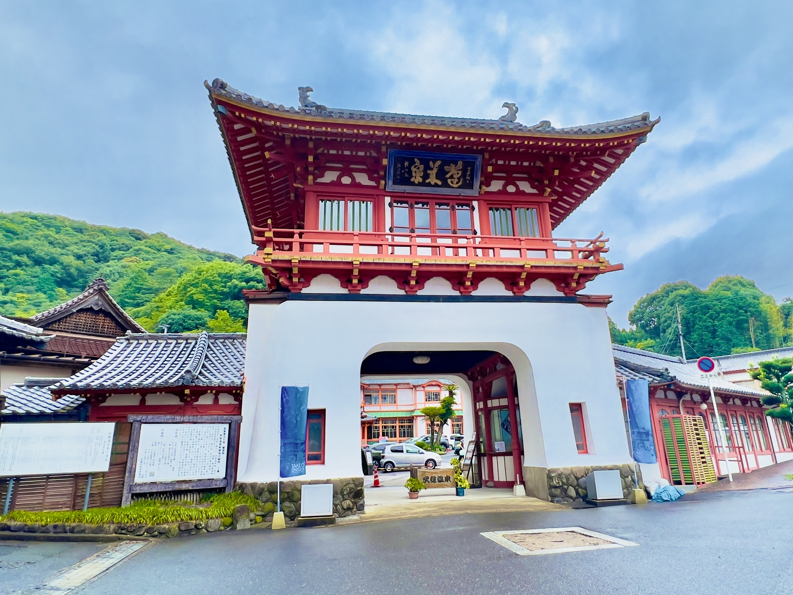
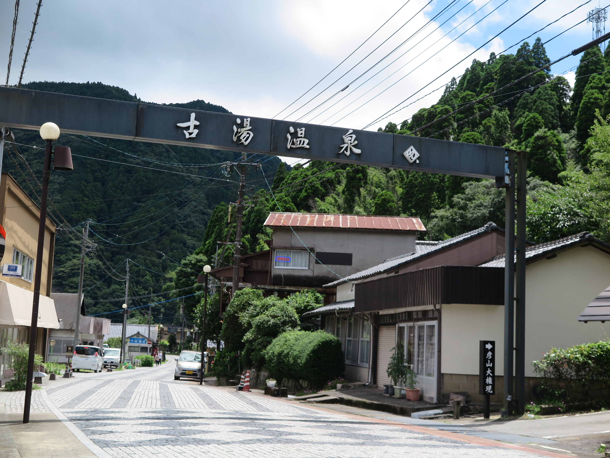

嬉野温泉
日本三大美肌の湯の一つとして知られる嬉野温泉。 なめらかな湯ざわりを楽しみながら、ゆっくりと旅の疲れを癒せます。
エリア 嬉野市
泉質 ナトリウム-炭酸水素塩・塩化物泉
心ほどける湯の街で、ゆったりとした時間を。 佐賀を代表する温泉地と、それぞれの魅力をご紹介します。

日本三大美肌の湯の一つとして知られる嬉野温泉。 なめらかな湯ざわりを楽しみながら、ゆっくりと旅の疲れを癒せます。
エリア 嬉野市
泉質 ナトリウム-炭酸水素塩・塩化物泉

長い歴史を持ち、朱塗りの楼門が印象的な武雄温泉。 やわらかな湯に浸かりながら、歴史ある温泉地の趣を感じられます。
エリア 武雄市
泉質 単純温泉

佐賀には、古湯温泉や熊の川温泉など、静かな環境で湯を楽しめる温泉地もあります。 豊かな自然に囲まれながら、穏やかなひとときを過ごせます。
エリア 佐賀市など
特徴 自然に囲まれた落ち着いた温泉地
温泉だけでなく、街歩きやご当地グルメなども一緒に楽しんでみましょう。
温泉街をゆっくり歩きながら、昔ながらの街並みや足湯などを楽しみましょう。
温泉施設や足湯などを巡りながら、それぞれに異なる湯の雰囲気を楽しんでみましょう。
入浴の前後にはしっかりと水分を補給し、長湯は避けて適度に休憩しながら温泉を楽しみましょう。
温泉湯どうふや地元のお菓子など、湯上がりにはその土地ならではの名物も楽しんでみましょう。
豊かな自然や歴史ある街並みに囲まれた佐賀の温泉。 心地よい湯に浸かりながら、心も体もゆっくりと癒してみませんか。